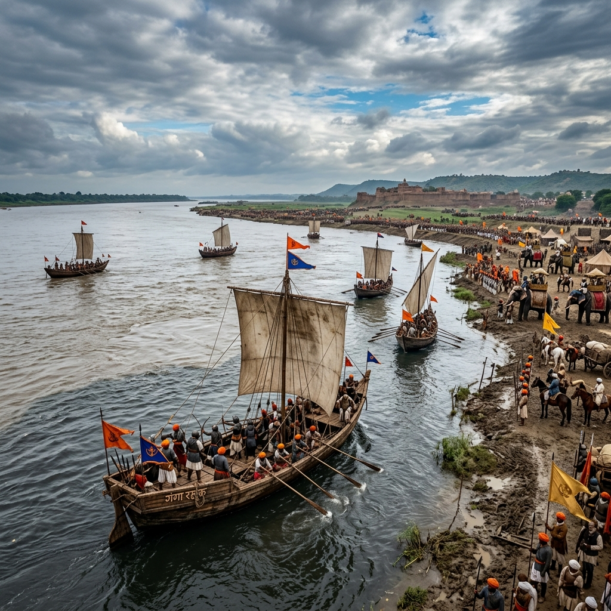
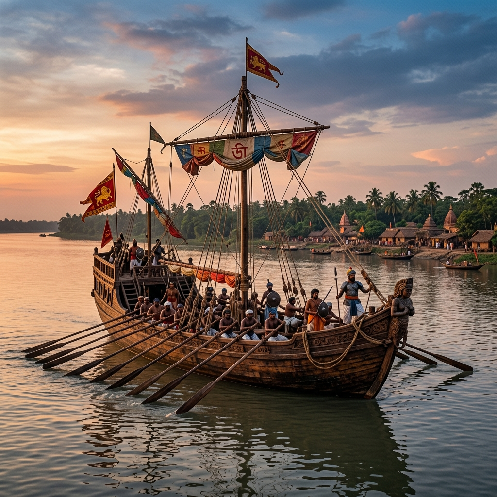
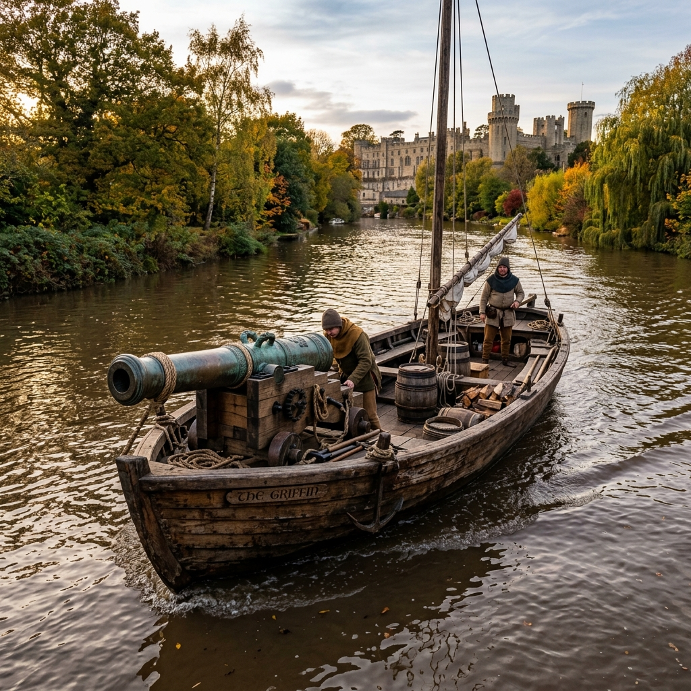

Battle of Ghaghra Explorer
Journey to the historic confluence of the Ganges and Ghaghra rivers. Explore Babur's final campaign in India—a masterpiece of medieval riverine and amphibious warfare that consolidated Mughal rule.
The Afghan Retrenchment and the Bengal Alliance
Following his landmark victories at Panipat (1526) and Khanwa (1527), Babur had secured Delhi and Agra. However, the remnants of the Afghan Lodi dynasty and eastern chiefs had retreated to Bihar and Bengal. They rallied around Sultan Mahmud Lodi, brother of the fallen Ibrahim Lodi, in a bid to reclaim the throne of Delhi.
This Eastern Afghan Confederacy secured the support of Sultan Nusrat Shah of Bengal. Faced with this threat to his eastern borders, Babur mobilized his veteran armies and marched from Agra in early 1529, initiating a campaign that would culminate in India's first major medieval river-confluence battle.
🏛️ At a Glance
- Combatants: Mughal Empire vs. Eastern Afghan Confederacy & Bengal Sultanate.
- Location: Confluence of Ghaghra and Ganges rivers, near Saran, Bihar.
- Outcome: Decisive Mughal victory; Bengal signs peace treaty.
- Significance: Babur's final major victory, securing the Mughal eastern frontier.
Belligerents & Commanders
Explore the key commanders who shaped the riverine battle of 1529.
Babur
The Mughal Emperor, directing artillery batteries and gunboats from the river confluence, coordinating land and water forces.
Prince Askari
Babur's capable son, who led a critical division upstream to execute a surprise crossing and flank the Afghan defensive lines.
Mahmud Lodi
The Afghan contender to the Delhi Sultanate throne, leading a confederation of eastern chieftains defending Bihar.
Sultan Nusrat Shah
The ruler of the Bengal Sultanate, providing a powerful riverine navy and flanking cavalry units to support the Afghans.
📈 Tactics & Formations
- Riverine Blockade: Bengal's navy blocked Babur's crossing at the river junction.
- Upstream Flank: Prince Askari led a division upstream under cover of night, crossing the river unopposed.
- Gunboat Artillery: Babur's barges carried heavy bronze mortar bombards to shell the Bengali fleet.
- Amphibious Assault: Combined land charges and boat landings broke the Afghan-Bengali defense.
The Upstream Crossing and River Bombardment
The Battle of Ghaghra was won through exceptional coordination between land cavalry and river flotillas. Babur's progress was initially halted by the Bengali war fleet, which was dug in at the confluence. To break the deadlock, Babur directed Prince Askari to march a division upstream, where they crossed the river secretly using local boats.
As Askari launched a surprise flank charge on the Afghan land positions, Babur initiated a frontal attack across the river. Mughal gunboats equipped with swivel cannons bombarded the Bengali vessels, scattering their fleet and allowing the main army to land and secure the victory.
Securing the Empire's Borders
The victory at Ghaghra established Babur's final borders and shaped the early history of the Mughal dynasty.
Peace Treaty with Bengal
Nusrat Shah agreed to a neutrality pact, promising not to harbor Babur's enemies, securing the eastern border.
Consolidation in Bihar
The Lodi Afghan resistance in Bihar was broken, leaving Babur's son Humayun a consolidated northern Indian realm.
Babur's Final Victory
This was Babur's last major military campaign. He passed away in December 1530, leaving a legacy of military innovations.
Campaign Timeline
Follow the campaign events of the early 1529 expedition.
Afghan Mobilization
Mahmud Lodi gathers the eastern Afghan chiefs in Bihar, threatening Mughal positions in Jaunpur.
Mughal March
Babur leads his army east from Agra, acquiring regional allies as he approaches the Ghaghra river.
Upstream Crossing
Prince Askari's flank division crosses the river upstream under cover of night and minor skirmishes.
The Decisive Clash
Askari attacks from the flank while Babur's gunboats launch a frontal assault, routing the coalition forces.
Relics of the River Battle
Explore the river confluence, war vessels, and bronze artillery of the campaign.

Ghaghra River Confluence
The river delta region where the amphibious clash occurred.

Bengal Sultanate War Ship
Reconstructed drawing of the river war vessel with large oars.

Mughal River Gunboat
The artillery boat used by Babur's forces to secure the crossing.
📚 References & Further Reading
- Babur, Zahir al-Din Muhammad (c. 1530). Baburnama (Memoirs of Babur).
- Chandra, Satish (2003). Medieval India: From Sultanat to the Mughals (Part Two). Har-Anand Publications.
- Shyam, Radhey (1978). Babur. Janaki Prakashan.
- Roy, Kaushik (2015). Warfare in Pre-British India - 1500-1740. Routledge.